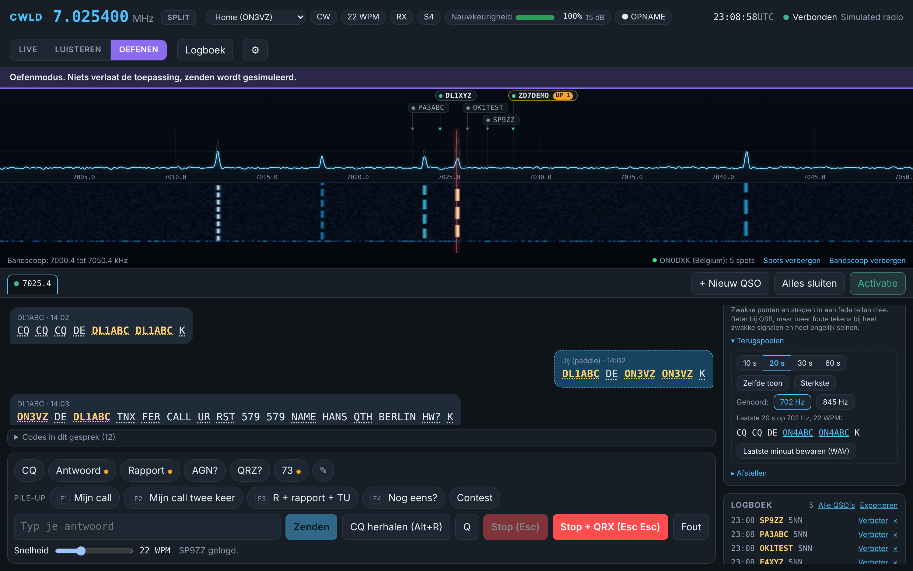
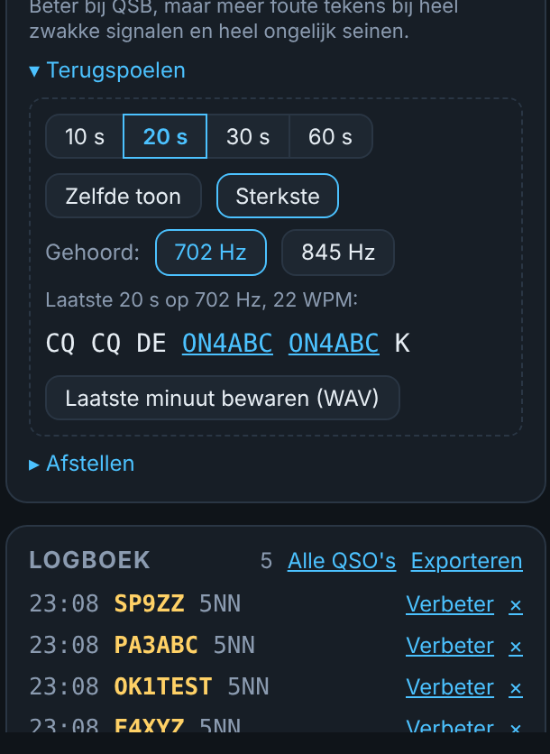
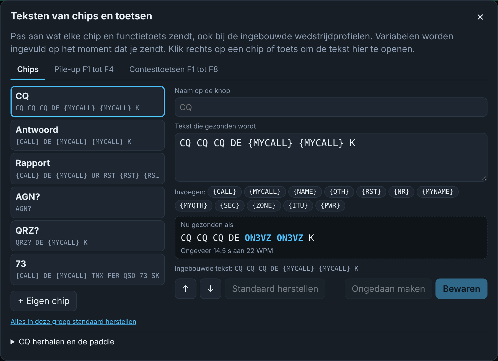
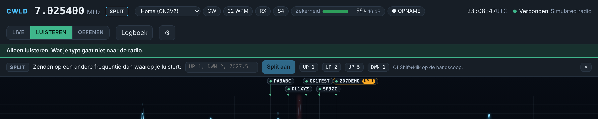
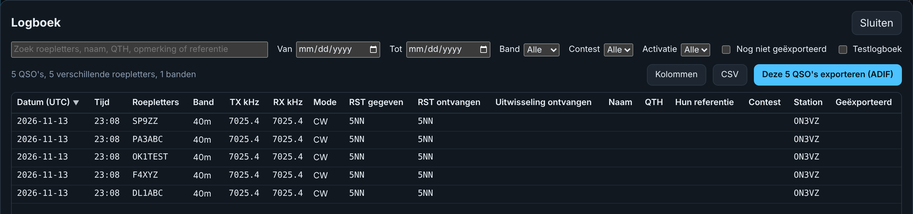

MModi
LIVE
De enige modus die zendt. Altijd in het rood.
LISTEN
Alleen ontvangen en decoderen. Veilig om te luisteren en te testen.
PRACTICE
Gesimuleerde stations in je koptelefoon. Er verlaat niets je computer.

KToetsen
| Toets | Wat het doet |
|---|---|
| Esc | Zenden meteen stoppen |
| Enter | Contest: het juiste bericht voor dat moment zenden (Run: CQ, uitwisseling, AGN?, dan TU en loggen) |
| Space | Contest: volgend veld in de invoerlijn |
| F1 to F8 | Contest: CQ (S&P: je roepletters), uitwisseling, TU en loggen, je roepletters, zijn roepletters, QSO B4, NR?, AGN |
| Ctrl+R | Contest: wisselen tussen Run en S&P |
| Ctrl+W | Contest: de invoerlijn wissen |
| Ctrl+F6, Ctrl+F7 | Contest: decoder Strongest en AFC |
| Alt+R | CQ herhalen met pauze en aftelling. Stopt bij elke toets, de paddle of een antwoord |
| Insert | Contest: zijn roepletters en jouw uitwisseling in één keer zenden |
| . | Contest: TU zenden en loggen, alleen als de uitwisseling compleet is. Buiten contestmodus enkel loggen |
| PgUp, PgDn | Snelheid 2 WPM sneller of trager (5 tot 60) |
| Ctrl+Up, Ctrl+Down | Afstemmen op de volgende spot boven of onder op deze band |
| Alt+Q | Terug naar de frequentie waar je het laatst CQ riep, split uit |
| Alt+F7 | Split uit, of de splitbalk openen |
?Vragen
CWLD vindt de radio niet
Controleer dat de radio aan staat en de kabel data doorgeeft. Open Apparaatbeheer (rechtsklik op Start) en kijk onder Poorten (COM en LPT). Kies in CWLD de eerste poort en, als er geen antwoord komt, de tweede. Controleer dat het CI-V-adres B6 is.
De frequentie op het scherm volgt de radio niet
Zet CI-V Transceive aan in de radio: MENU, SET, Connectors, CI-V. CWLD vraagt de radio ook af en toe om de frequentie, maar met Transceive gaat het meteen.
De waterfall is leeg en er wordt niets gedecodeerd
Kies in Instellingen, Audio, USB Audio CODEC en klik op Herstart met deze instellingen. Controleer dan de drie microfoon-privacyschakelaars van Windows en zet geluidsverbeteringen uit. Zorg dat er een CW-signaal in het filter van de radio staat en dat het AF-niveau niet nul is.
Windows of mijn antivirus blokkeert het installatieprogramma
CWLD is nog niet digitaal ondertekend, dus Windows is voorzichtig. Klik op Meer info en dan op Toch uitvoeren. Verwijdert een antivirus het bestand, vergelijk dan de SHA-256-controlesom met die in het downloadgedeelte en sta het bestand toe.
Zendt CWLD uit zichzelf?
Nee. Alleen de LIVE-modus zendt, en alleen als je typt, een toets indrukt of op een chip klikt. Esc stopt meteen. LISTEN en PRACTICE zenden nooit.
Werkt mijn paddle nog?
Ja. De keyer van de radio werkt zelfstandig en CWLD blokkeert hem nooit.
Waar staan mijn gegevens?
Alles blijft op je computer. Instellingen en logboek (logbook.db, met een reservekopie bij elke start) staan in %APPDATA%\io.github.on3vz.cwld. Opnames gaan naar Documenten\CWLD. Druk op Windows+R, plak de mapnaam en druk op Enter om ze te openen.
Ik miste een roepletter, kan ik het opnieuw lezen?
Ja. Open Terugspoelen in de kaart Audio en lees de laatste 10 tot 60 seconden opnieuw, ook op een andere toon. Laatste minuut bewaren (WAV) bewaart het als bestand.
Een sterk station naast het mijne stoort de decoder
Kies Steil naast Smal en Breed in de kaart Audio. Het heeft de breedte van Smal maar veel steilere flanken.
Kan ik de teksten van de F-toetsen en chips aanpassen?
Ja. Klik met rechts op een chip of toets, of klik op het potloodje. Het werkt ook voor de contesttoetsen van de ingebouwde profielen en Standaard herstellen brengt het origineel terug.
Het DX-station werkt split, wat doe ik?
Klik op het label van zijn spot op de bandscoop als het een oranje badge heeft zoals UP 1. Anders klik je op SPLIT en typ je UP 1. Split uit of Alt+F7 zet het uit, Alt+Q gaat terug naar je CQ-frequentie.
Kan ik deze pagina vanuit de app openen?
Ja. Kies in Instellingen Updates en info en klik op Helppagina openen. Dan opent deze pagina in je browser, in de taal van de app.
Hoe update ik?
Download het nieuwste installatieprogramma van de startpagina en voer het uit over de oude versie. Je instellingen en logboek blijven bewaard.
Hoe krijg ik mijn QSO's in mijn logprogramma?
Gebruik de exportfunctie van het logboek. Die schrijft een ADIF-bestand, na een controlevenster met fouten en waarschuwingen. Importeer dat bestand in Log4OM of een ander logprogramma.
CContest
Zet de contestmodus aan en kies een contestprofiel. De invoerlijn neemt roepletters, rapport, volgnummer en het extra veld van het profiel. Het volgnummer gaat omhoog als je logt, niet als je het zendt. Een rode DUPE toont dezelfde roepletters op dezelfde band, en loggen blijft mogelijk.
De testmodus (oranje) schrijft naar een apart testlog dat nooit meetelt voor dupes en nooit in de export komt.
PPortable
Kies het profiel Home of Portable in de statusbalk. Voor een activatie (WWFF/ONFF, POTA, SOTA) vul je de referentie en het grid in. Beide komen in elk QSO, en een controlevenster voor de ADIF-export vangt ontbrekende grids of foute referenties op.
OOefenen
PRACTICE decodeert een gesimuleerde band en speelt die af op je computer. Er wordt niets gezonden, dus draai de AF-knop van de radio laag. Kies een oefening, een snelheidsbereik en een signaalsterkte, en bekijk op het einde je score. Zet de hulp van de decoder uit om op het gehoor te kopiëren.

RTerugspoelen
CWLD bewaart de laatste minuut geluid. Open Terugspoelen in de kaart Audio, kies hoe ver terug (10, 20, 30 of 60 seconden) en klik op Zelfde toon, Sterkste of een van de toonhoogtes onder Gehoord. Een aparte decoder leest dat stuk opnieuw, dus de live decoder wordt niet gestoord. Roepletters in het resultaat zijn aan te klikken.
Laatste minuut bewaren (WAV) schrijft de laatste minuut (8 kHz, mono) naar je opnamemap, met datum, tijd en frequentie in de naam.
Twee instellingen helpen bij een sterke buur en bij uitgespelde roepletters: de filterkeuze Steil (de breedte van Smal met veel steilere flanken, een station 60 Hz verderop is zo'n 40 dB zwakker dan bij Smal) en Letters samenvoegen, dat D L 4 S A V toont als DL4SAV.

TTeksten en CQ herhalen
Klik met rechts op een chip of functietoets, of klik op het potloodje, om te bewerken wat hij zendt. Dit werkt ook voor de contesttoetsen F1 tot F8 van de ingebouwde profielen. Gebruik de variabelen {CALL}, {MYCALL}, {NAME}, {QTH}, {RST}, {NR}, {MYNAME} en {MYQTH}. Het venster toont wat er verzonden wordt met de waarden van nu en hoe lang het duurt, en waarschuwt bij onbekende variabelen, tekens die de radio niet kan zenden en losse accolades. Standaard herstellen werkt per item en per groep.
CQ herhalen (Alt+R) roept CQ, luistert met een aftelling en roept opnieuw (pauze 2 tot 60 s, hoogstens 1 tot 30 keer). Het start nooit vanzelf en stopt bij elke toets, bij de paddle, bij een antwoord, bij Stop, bij een SWR-alarm en na de laatste keer.
Tekst die je typt terwijl de paddle seint, wacht onder Wacht op de paddle en gaat weg zodra de paddle 14 puntlengtes stil is. Esc wist hem.

SSplit
Met split luistert de radio op de ene frequentie en zendt ze op een andere, zoals een DX-station in een pile-up vraagt. Een spot met UP 1, UP 1-2, DWN 2 of QSX 7027.5 in de opmerking krijgt een oranje badge op zijn label en met één klik staan ontvangstfrequentie, zendfrequentie en split goed. Met de hand: klik op SPLIT, typ UP 1, -2 of een frequentie en druk op Enter, of houd Shift ingedrukt en klik op de bandscoop.
Terwijl split aan staat, toont een oranje balk beide frequenties en de knop Split uit. CWLD weigert een zendfrequentie buiten de band en verandert niets terwijl de radio zendt. Split die je op de radio zelf zet, zie je ook in CWLD. Nog niet op de radio geprobeerd: tests A68 tot A70.

LLogboek
Klik op Logboek naast het tandwiel. Zoek, filter op datum, band, contest of activatie, sorteer met een kolomkop en kies de kolommen met Kolommen. Klik op een rij om elk veld van een QSO te wijzigen. Deze N QSO's exporteren (ADIF) schrijft precies wat het filter toont, CSV schrijft een bestand met puntkomma's dat Excel goed opent.
Elk QSO heeft een zendfrequentie (TX kHz) en een ontvangstfrequentie (RX kHz). Bij een QSO in split verschillen ze. ADIF FREQ is de zendfrequentie, een QSO in split krijgt ook FREQ_RX.

DLand en afstand
Naast een roepletter toont CWLD het land, de richting en de afstand, bijvoorbeeld Germany EU 75° ~407 km. Het land komt uit een prefixtabel die portabele roepletters begrijpt (ON3VZ/P, EA8/ON3VZ). Richting en afstand vertrekken vanaf je locator (vul ze in bij Instellingen, Station). Met een locator van QRZ.com gaan ze naar het station zelf, anders naar het midden van het land, en het teken ~ zegt dat het ruw is. De tabel is met de hand gemaakt en kan gaten hebben bij speciale prefixen. Alles blijft op het scherm.
In contestmodus verschijnt een herinnering dat een decoder in sommige contests als hulp telt of niet toegestaan is. Lees het reglement van de contest en kies zelf je klasse.